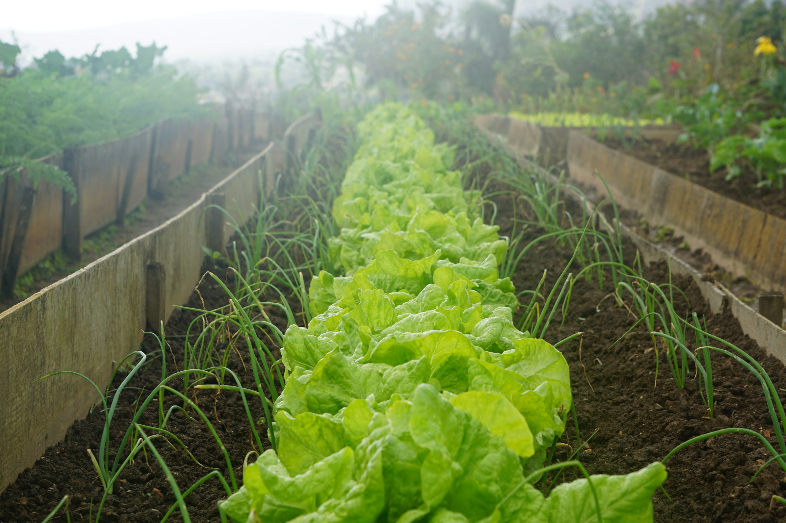

A beautiful landscape captured in the Alps.
Source
Our charity garden project transforms unused urban spaces into thriving
community gardens. We grow fresh produce, host educational workshops,
and build stronger neighborhoods together.
This blog shares our progress, stories from volunteers, and updates on
how the garden is helping local families.
Aktuelles
Breaking Ground: Turning Vacant Lots into Green Spaces
Posted on March 12, 2026 · by Alex (Project Coordinator)
Today we officially broke ground on our first community garden plot!
What was once an overgrown, unused lot is now on its way to becoming
a shared space for fresh produce, learning, and connection. Volunteers
helped clear debris, mark out beds, and plan irrigation lines.
Local residents stopped by to share ideas on what they’d like to grow:
from tomatoes and peppers to medicinal herbs and pollinator-friendly
flowers. The enthusiasm reminded us why this project matters: it’s not
just about food, it’s about community ownership and pride.
From Seed to Table: First Harvest for the Food Pantry
Posted on April 27, 2026 · by Maya (Volunteer)
Our first harvest exceeded expectations! Together, volunteers and
neighbors picked over 80 pounds of fresh produce: kale, lettuce,
radishes, and spring onions. The very next morning, we delivered boxes
of vegetables to the community food pantry.
Pantry staff told us that many visitors are excited to receive fresh
produce and have asked for recipes and cooking tips. In response,
we’re planning simple cooking demonstrations right in the garden,
showing how to make healthy meals with what we grow.
Workshops in the Garden: Learning and Growing Together
Posted on May 10, 2026 · by Sam (Education Lead)
The garden is now a living classroom. Over the past month, we’ve
hosted weekend workshops on composting, seed saving, organic pest
management, and container gardening for apartment dwellers.
Attendance has been fantastic. Many participants are first-time
gardeners who want to grow even a small amount of food at home. We’ve
focused on low-cost, practical techniques and shared starter kits
with seeds and soil for those who need them.
Mitmachen
There are many ways to support the Garden Charity Project, whether you
can give your time, your skills, or a financial contribution.
Mitglied werden
Join us for weekly garden days, harvest events, or workshop
support. No experience needed—just a willingness to learn and get
your hands in the soil.
Your donations help us purchase tools, seeds, soil, and educational
materials. Every contribution directly supports the garden and our
community programs.
Examples of impact:
$15 provides seeds for an entire season’s planting.
$40 equips a new volunteer with tools and gloves.
$100 sponsors a children’s garden workshop.
Contact Us
Have questions, ideas, or want to partner with us? Send us a message
and we’ll get back to you as soon as we can.